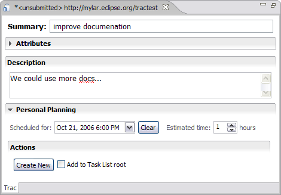
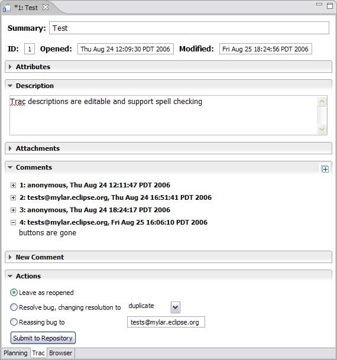
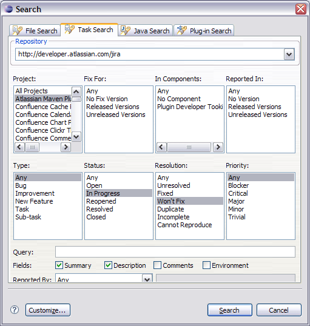
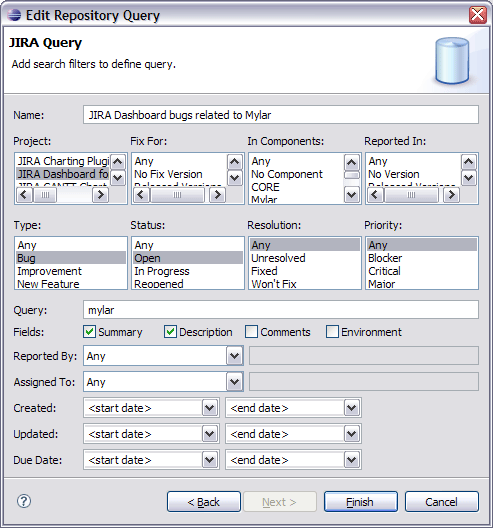

| Task Repository Connectors | ||
|---|---|---|
|
|
|
|
| Team Support | Integration with other tools | |
Mylyn allows you to collaborate on tasks via a shared task repository, also known as bug tracking systems. In order to collaborate, you need to have a Connector to your particular repository.
Presently Bugzilla, JIRA, and Trac are supported. To connect to unsupported repositories, see Generic Web Repository Connectors. Also, be sure to vote for your favourite Connector to see it supported earlier, or create a new bug if your issue tracker is not listed.
Once Mylyn is installed there are a few steps involved to get up and running.
 .
.

See also Bugzilla Connector Troubleshooting.
Mylyn periodically checks config.cgi to retrieve the repository configuration. On Eclipse.org this resulted in heavy CPU Load for the regeneration and a big surge in band width use.
Mylyn has been modified to accept gzip encoding on all requests, and will do content negotiation. See bug 205708.
To add caching for your Bugzilla repository:
via CVS: :pserver:anonymous@dev.eclipse.org:/cvsroot/technology/org.eclipse.phoenix/infra-scripts/bugzilla/ or: http://dev.eclipse.org/viewcvs/index.cgi/org.eclipse.phoenix/infra-scripts/bugzilla/?root=Technology_Project
The Trac connector offers two access methods:
The Trac connector integrates Trac queries into the Task List. If you do not know your Trac repository version use the Automatic setting and click Validate Settings.
New Task Editor
A rich editor for creating new Trac tasks is available for repositories that use XML-RPC (see the FAQ for XML-RPC configuration instructions).

Rich Editor, Attachments and Offline support
The Trac connector supports the rich task editor. Attributes and comments can be viewed and edited offline, synchronization is done in the background, and attachments can be posted and retrieved.
Task Context attachments are supported via the context menu actions in the Task List. This support requires the Trac XML-RPC plug-in to be enabled and the integration will fall back to the web mode if it is not, (see: Trac Connector troubleshooting).

See this page for install instructions and additional screen shots. Note that the Mylyn JIRA connector requires at least JIRA version 3.3.3 and SOAP/RPC services have to be enabled on the server.
Rich Editor
The JIRA connector provides a rich editor, offline editing, and change notifications.

Search Integration
Searching through JIRA repositories is integrated with the Search dialog.

Query
The JIRA query dialog has been streamlined into a single page. Date range queries are now supported.

See also JIRA Connector Troubleshooting.
The generic web repository connector is NOT part of the default Mylyn install. You can install it from a separate extras update site. See Mylyn download page for more details.
The web connector allow to retrieve tasks from repositories that don't have rich connectors, but can show list of tasks on the web UI. Out of the box connector provides configuration templates for the following issue tracking systems:
code.google.com)java.net, dev2dev, tigris.org)objectweb.org)sf.net), see
Using Sourceforge with Mylyn
www.futureware.biz/mantis)changelogic.araneaframework.org)otrs.org)Lists of issues can be extracted from existing web pages using simple parsing configuration. Configuration can be also parametrized to make it easier to customize it for a specific project.
The parameters used for configuring project properties are typically substituted into the URLs used to access the repository. Substitution and matching rules can be edited under the Advanced Configuration section on both the Repository Settings page and the Edit Query page.
See FAQ for the troubleshooting tips.
For example, consider the configuration steps for GlassFish project at java.net:
1. Create new Generic web-based repository (in the Task Repository view). GlassFish is using IssueZilla and has a preconfigured template that can be selected by server url https://glassfish.dev.java.net/issues . You can also specify all fields manually in the Advanced Configuration section. For GlassFish the following settings are required:
${serverUrl}/show_bug.cgi?id=${serverUrl}/enter_bug.cgi?issue_type=DEFECT${serverUrl}/buglist.cgi?component=glassfish&issue_status=NEW&issue_status=STARTED&issue_status=REOPENED&order=Issue+Number<a href="show_bug.cgi\?id\=(.+?)">.+?<span class="summary">(.+?)</span>regexp with 1st matching group on
Issue ID and 2nd on
Issue Description. Alternatively, you could use named matching groups: ({Id}.+?), ({Description}.+?), ({Status}.+?), ({Owner}.+?) and ({Type}.+?), then they can appear in query regexp in an arbitrary order. The second option requires build 2.0.0v20070717 or later.
${..}. Variables serverUrl, userId and password are substituted from the values of corresponding fields of the repository preference page. In addition you can specify any arbitrary parameters and their values that will be also substituted into the template fields.
For the web repository that require user to login, use advanced configuration in following way. This configuration is for GForge, you might need to change it for other repositories:
${serverUrl}/account/login.php?return_to=&form_loginname=${userId}&form_pw=${password}&login=Login
(POST)
${serverUrl}/account/login.php
loginToken parameter from the form page
(only needed if server need a login token in the parameters of the Login Request URL and Login Form URL is specified): session_ser=(.+?)
2. Create a new query for the GlassFish task repository created above (either from popup context menu in the Task List view or using a "New..." wizard from File -> New... -> Other... menu).

The XPlanner connector is currently in the Experimental state. It supports XPlanner version .7.
Query
XPlanner Connector supports creating queries from your XPlanner repository. You can select to create a query for your own in progress tasks (the default), or select projects or iterations or user stories from a list. You can also select ones assigned to you, or all. Currently you can choose to group the results by tasks or user stories. If you group the results by tasks, this will result in a single query with the applicable tasks underneath it. If you choose to group the results by user stories, this will result in multiple queries added to the task list, each one corresponding to a user story, with the applicable tasks underneath it:

Task Editor
A rich editor for editing XPlanner tasks is available. It currently doesn't support all of the attributes you can change in XPlanner itself, but allows you to modify the basic ones necessary for XP development -- e.g. summary, description, estimated time. The attributes section of the editor displays an XPlanner-like view of the meaningful attributes, some of which are not editable.

User Story Editor
If you open an XPlanner element by id, using the "Open Repository Task by Key/ID" dialog, and that id is a user story id, you will see the read-only user story editor. This editor is just useful for seeing the major details of a user story -- no items in it can be changed, since there is no really good mapping between a user story and a Mylyn task.

|
|

|
|
| Team Support | Integration with other tools |